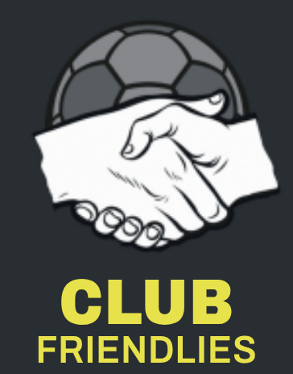
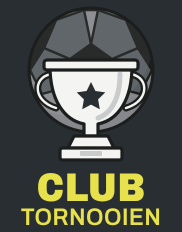
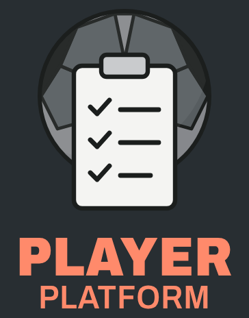
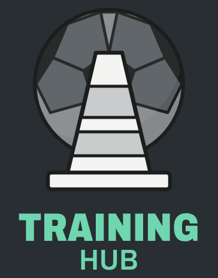
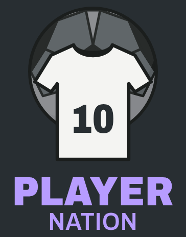

Oefenmatch & Tornooi
Nu open

Nog geen tegenstander voor zaterdag of tornooi voor de paasvakantie?
TornooiBekijkOrganiseer
Coach Speler
binnenkort
Je ploeg online! Na elke match denken je spelers zelf na over wat er gebeurde.
- Ze begrijpen het verhaal van de match en leren meedenken
- Verantwoordelijkheid: zichzelf en hun ploegmaats eerlijk beoordelen
- De tegenstander leren kennen en lezen
Training Hub
binnenkort
Je favoriete oefenvideo's per thema bewaard, plus een gedeelde bibliotheek van andere coaches.
- Links van YouTube, Instagram of TikTok
- Opwarming, techniek, eindspel, keeper…
- Zelf kiezen wat je deelt
Mijn video'sBinnenkort
BibliotheekOefeningen van andere coachesBinnenkort
ThePlayerNation

Iets nieuws, speciaal voor spelers. Hoe het werkt vertellen we je binnenkort.
Voor spelersBinnenkort
wordt vervolgd…